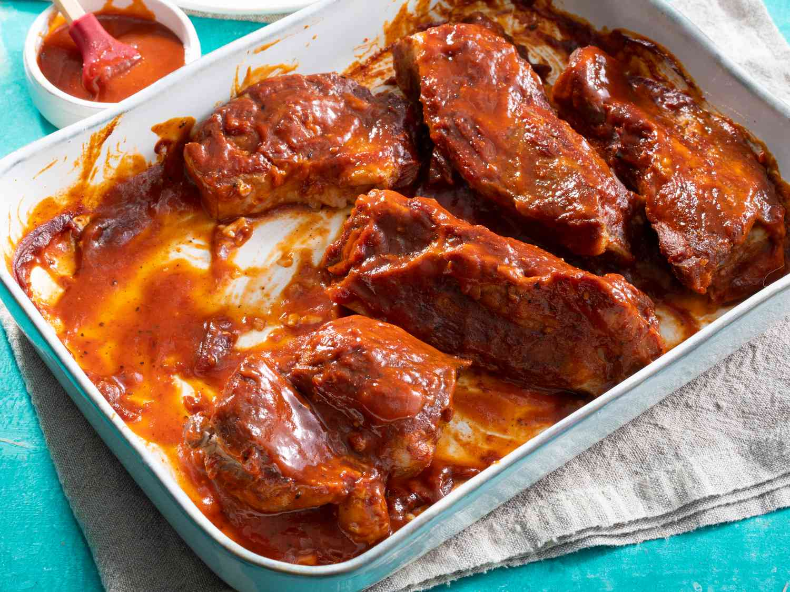

Home
Simple BBQ Ribs

Make the perfect ribs without the grill using this tasty BBQ ribs recipe. All you need is five simple ingredients and your oven for these tender, flavorful ribs that your whole family will love.
After one bite, you'll never want to use another BBQ rib recipe ever again.
Ingredients
1 (16 ounce) bottle Italian dressing (such as Olive Garden℠ Signature Italian Dressing)
1/4 cup grated Parmesan cheese
4 boneless skinless chicken breasts
Steps
- Gather all ingredients.
- Place ribs in a large pot and cover with water. Stir in kosher salt, garlic powder, and pepper, and bring water to a boil over medium heat. Continue to boil until ribs are tender, 40 to 45 minutes.
- While the ribs are boiling, preheat the oven to 325 degrees F (165 degrees C).
- Remove ribs from the pot, and place them in a 9x13-inch baking dish. Pour barbeque sauce over ribs. Cover the baking dish with aluminum foil.
- Bake in the preheated oven until the internal temperature of the pork has reached 160 degrees F (70 degrees C), 1 to 1 1/2 hours.
- Serve hot and enjoy!